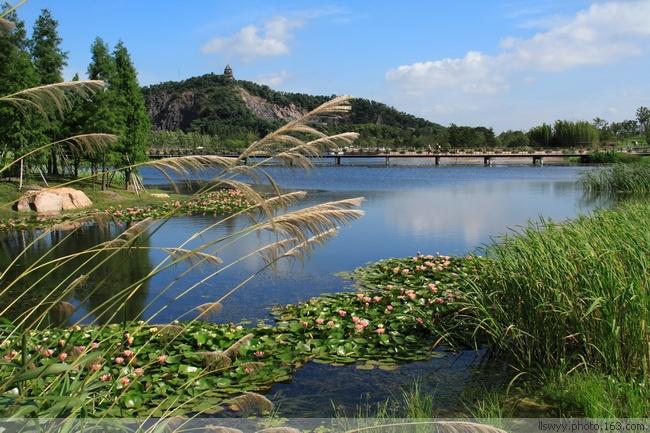
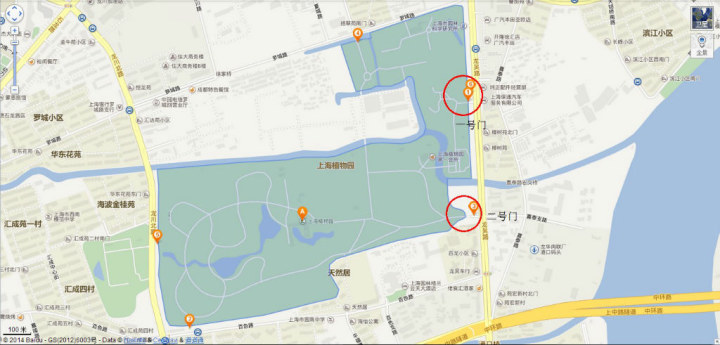
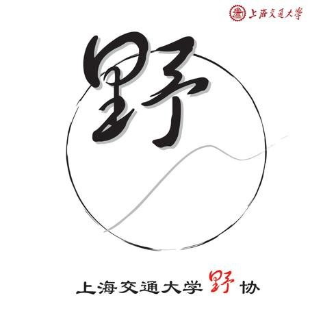
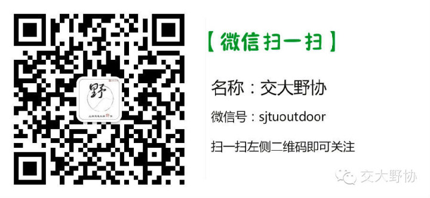

发信人: BeatboxST (ST), 信区: outdoor
标 题: 野协【第七届公园定向赛】召集帖
发信站: 饮水思源 (2014年05月08日00:01:33 星期四)
【活动概述】
2014上海交大野外生存协会第七届公园定向挑战赛由上海交大团委主办，上海交大野外生
存协会承办，是上海交大野外生存协会一年一度公园定向盛会，特此声明提供素拓哦！
一、比赛时间及地点
比赛时间：2014年5月25日 下午1点30
比赛地点：上海植物园（龙吴路1111号 拖鞋门乘958路至龙吴路龙水南路可到）

上海植物园占地81公顷，1978年4月正式对外开放。园内设有盆景园、牡丹园、蔷薇园、竹
园等十几个专类园区。其中盆景园占地3.3公顷，汇集了以海派盆景为代表的精品近千盆，
为国内最大国家盆景园之一。新改建的兰室以民居式园林建筑为主题，占地1.11公顷。
 screen.width - 200){this.width = screen.width - 200}">
二、报名方式
同去网报名，如有疑问可联系18005803058汪同学，报名截止时间5月20日24：00(周二)
注：
1、我们预计会在5月22日（周四）晚召开准备会，会上会介绍一些基本定向知识和比赛当
日的具体规则，具体时间地点会另行通知。
2、比赛赛制为团队赛，建议结伴报名，注意完整团队报名时需注明组长，非完整团队需单
独报名，在准备会前会随机分组。
3、由于场地以及时间有限，取报名前200人
4、活动费用共计30元（赛事组织费10元，上海植物园门票20元（凭学生证半价），自费望
多包涵。）
5、奖品
一等奖共1组帐篷1顶或睡袋3个或使用套锅3组，二等奖共2组头灯3个或野协抓绒会衫3件或
USB电扇3个，三等奖共5组头巾3条或抓绒手套3副或指南针3个，完成比赛均可获得快挂
三、比赛规则
1、比赛为团队赛，每队由三人组成
2、参赛队伍按照地图和打卡纸进行比赛，在指定区域内寻找所布置的点标旗和打卡器，并
在打卡纸上打卡
3、每两分钟发出两队，发队时为了分散人流，规定了每个队伍所要完成的第一个点，发队
后每支队伍完成规定点之后，则可以自行安排路线完成剩下的点（并非每个点都必须完成
，在时间和任务点数之间可自行取舍）。
4、最终成绩按照正确打卡的点数排名，点数相同的队伍再比较时间
5、每队比赛时间为90分钟，超过90分钟队伍比赛成绩无效
 screen.width - 200){this.width = screen.width - 200}">
四、注意事项
1、原则上每组必须集体行动，不可分散，且不可使用任何交通工具（如植物园内出租的自
行车）有野协工作人员巡场，一经发现，口头警告并酌情给予加时处罚；若第二次犯规，
取消比赛资格。
2、不允许2队之间互相合作，以保证公平性。
3、比赛过程中请注意自我人身和财产安全。
报名网址：同去网
http:tongqu.me
 screen.width - 200){this.width = screen.width - 200}">
 screen.width - 200){this.width = screen.width - 200}">
--
※ 来源:·饮水思源 bbs.sjtu.edu.cn·[FROM: 112.84.183.163]
|